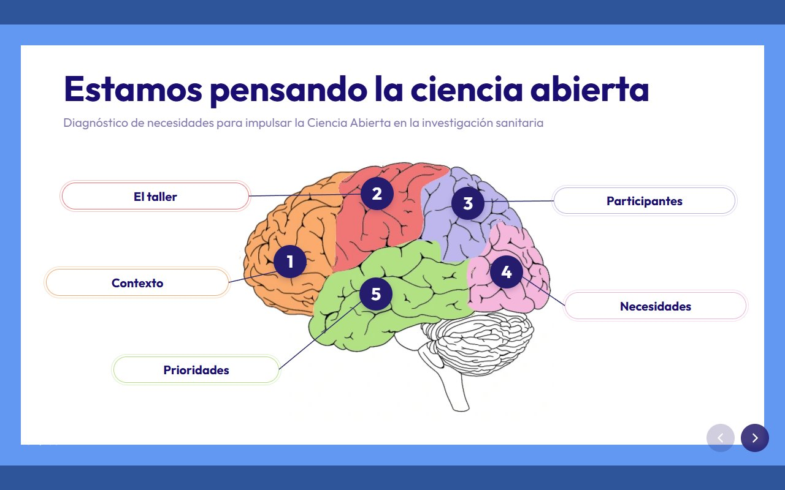
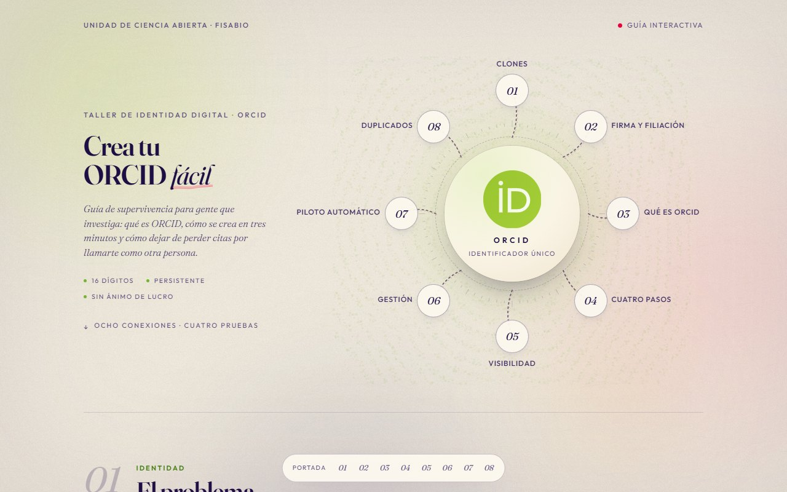

Taller · Ciencia participativa
Guía interactiva
Estamos pensando la ciencia abierta
Diagnóstico de necesidades, participantes y prioridades para impulsar la ciencia participativa en la investigación sanitaria.
Entrar
Taller · Identidad digital
Guía interactiva
Crea tu ORCID fácil
Ocho conexiones y cuatro pruebas: firma, perfil, visibilidad, automatización y duplicados. La guía de supervivencia del investigador.
Entrar